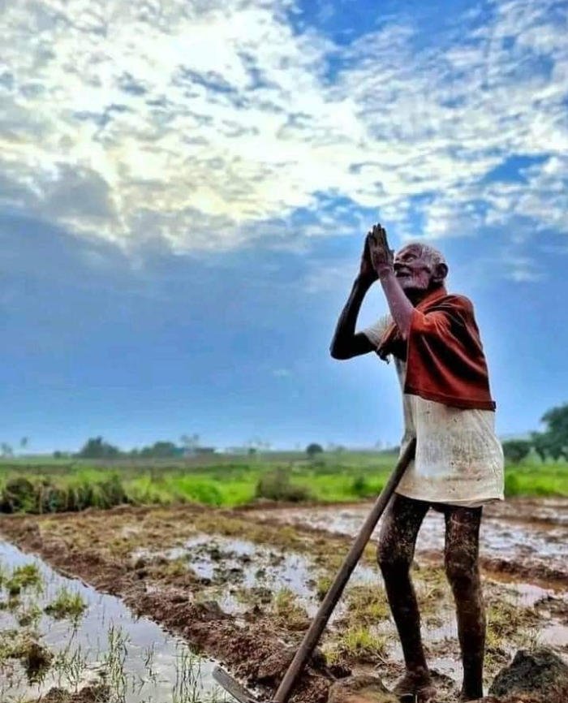
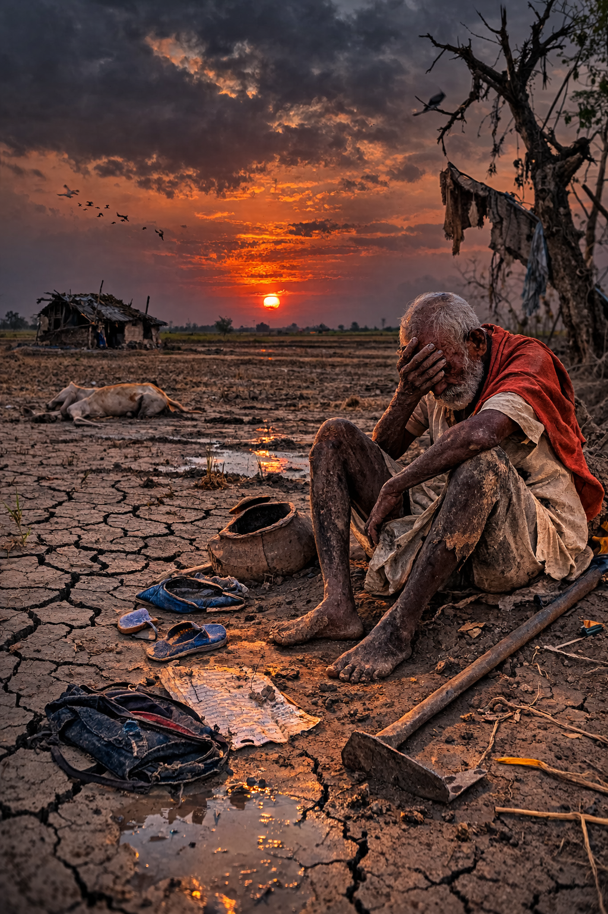

Farmers feel immense happiness when their crops grow successfully and the harvest season arrives. Festivals like Sankranti celebrate the success of agriculture and the hard work of farmers. Working close to nature, watching plants grow, and feeding the nation brings farmers pride, joy, and satisfaction.

Farming is not always joyful. Farmers often face difficult challenges such as droughts, floods, crop failure, rising costs of seeds and fertilizers, and unstable market prices. These problems sometimes create financial stress and uncertainty for farming families.